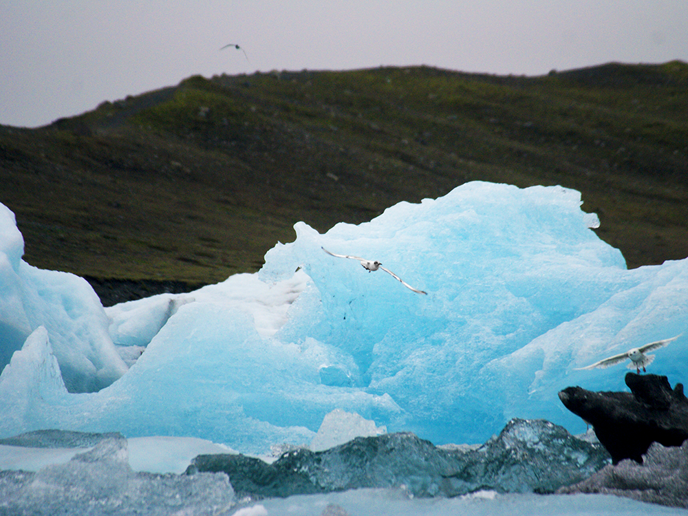
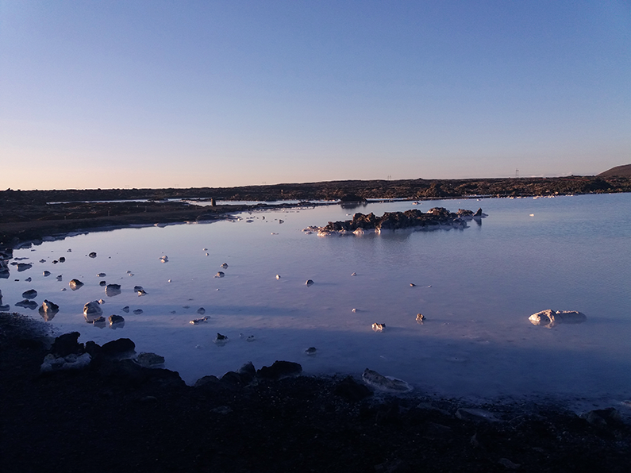
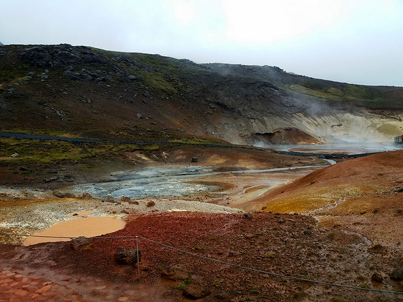
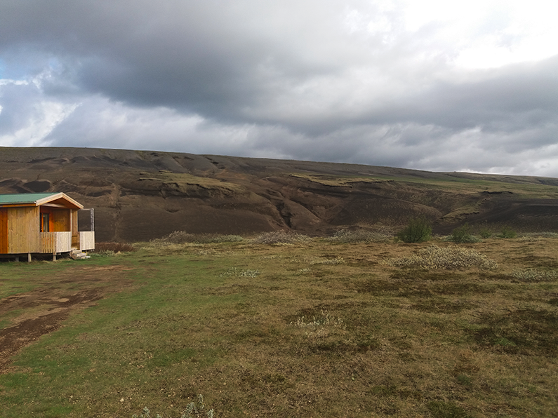
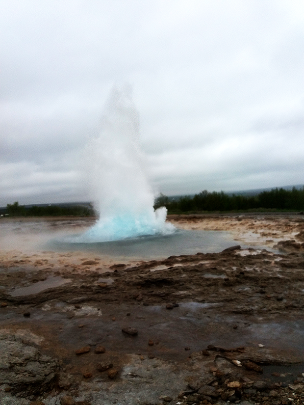
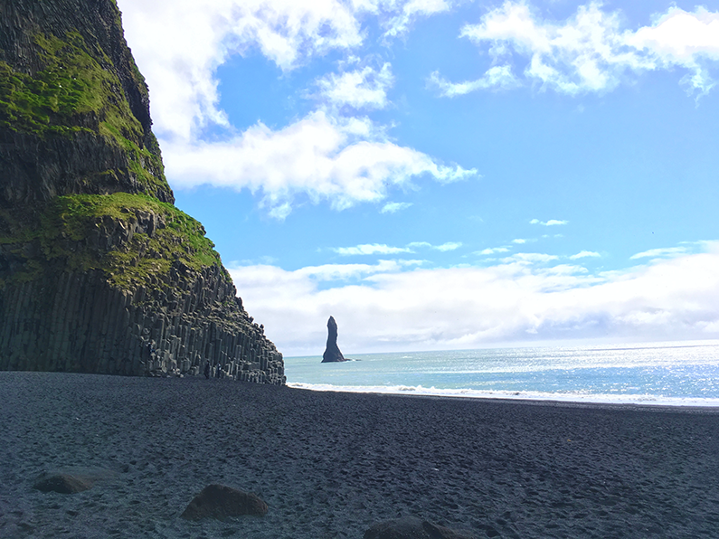
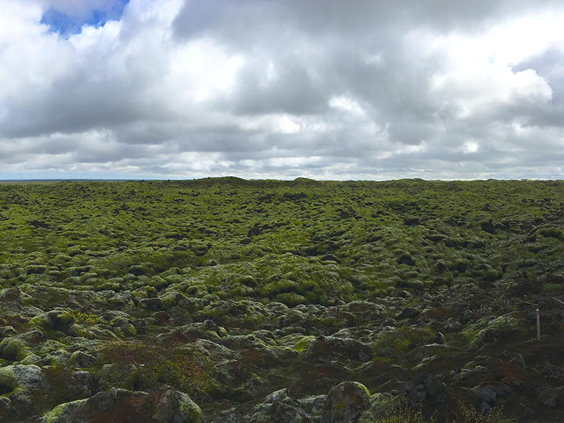
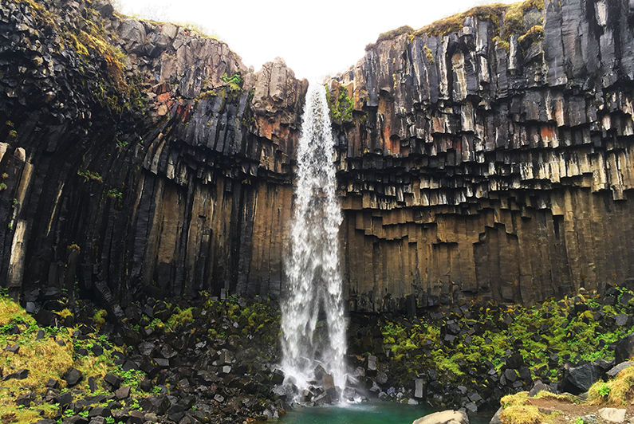

IJsland, het land van vuur en ijs

Gereisd in: Mei 2019
IJsland is puur natuur. De plek waar twee werelden samen komen; vulkanen met uitgestrekte lavavelden maar ook de vele gletsjers en meren. Het land waar de Noord-Amerikaanse en Euraziatische tektonische platen elkaar ooit raakten. Dit eiland is het bewijs dat je Europa niet uit hoeft te gaan om prachtige natuurwonderen te ervaren. IJsland verrast, of je er nu in de witte winter naartoe gaat om het Noorderlicht te zien, in de groene lente wanneer alles in bloei staat of in de zomer om die schattige papegaaiduikers te spotten. Ieder seizoen heeft een of meer redenen om dit prachtige land te bezoeken.
IJsland is puur natuur. De plek waar twee werelden samen komen; vulkanen met uitgestrekte lavavelden maar ook de vele gletsjers en meren. Het land waar de Noord-Amerikaanse en Euraziatische tektonische platen elkaar ooit raakten. Dit eiland is het bewijs dat je Europa niet uit hoeft te gaan om prachtige natuurwonderen te ervaren. IJsland verrast, of je er nu in de witte winter naartoe gaat om het Noorderlicht te zien, in de groene lente wanneer alles in bloei staat of in de zomer om die schattige papegaaiduikers te spotten. Ieder seizoen heeft een of meer redenen om dit prachtige land te bezoeken.
Op weg
IJsland is uitstekend met een huurauto te ontdekken, vooral omdat je hiermee mooie afgelegen plekken kunt bereiken. Ringweg 1 (de hoofdweg) brengt je langs vele hoogtepunten van het land. Verder zijn er veel gravelwegen. Onderweg zie je vele schapen en ontdek je hoe het mysterieuze landschap continu verandert en passeer je boerderijtjes en mistige bergen. Af en toe denk je dat IJsland ook Grijsland kan heten maar even later breekt de zon door! Alweer een waterval, de ene nog mooier dan de ander. Omdat er zo weinig mensen wonen (360.000), voelt het soms alsof je in "the middle of nowhere bent". Voor sommige afgelegen delen van het land heb je echter een 4x4 auto nodig, zoals op de F-wegen en in de Hooglanden.


Reykjavik en omgeving
Reykjavik, wat ook wel rokerige baai betekent is de hoofdstad van het land. Ruim een derde van de inwoners van het hele land woont in het kleurrijke Reykjavik en de directe omgeving. Het is ook de enige echte "grote" stad. Het barst er van de "puffinstores" oftewel souvenirwinkels, huisjes met golfplaten en het is de ideale plek om wat typisch IJslandse gerechten te proberen. We kennen allemaal Skyr maar wat dacht je van lamssoep? Diverse soorten hotdogs of een schapenkop behoren ook tot de mogelijkheden. Een aanrader om te bezoeken in de omgeving is de populaire Blue Lagoon. Deze met silica gevulde warmwaterbron is een heerlijk begin of afsluiter van je vakantie. Ervaar en oordeel zelf hoe blauw of wit dit water is! In de buurt van de Blue Lagoon vindt je het kleurrijke geothermische gebied Krysuvik.
Buiten de hoofdstad zijn er weinig supermarkten, winkels, restaurants, steden en mensen. Maar Tetta Reddast, oftewel "alles zal goed komen" in het IJslands. De natuur laat je zien hoe mooi en ongerept de wereld kan zijn. Wat dacht je van slapen aan de voet van een vulkaan?
Buiten de hoofdstad zijn er weinig supermarkten, winkels, restaurants, steden en mensen. Maar Tetta Reddast, oftewel "alles zal goed komen" in het IJslands. De natuur laat je zien hoe mooi en ongerept de wereld kan zijn. Wat dacht je van slapen aan de voet van een vulkaan?

Golden Circle
Eén van de populairste bezienswaardigheden van het land is de "Golden Circle" en dat is logisch want het is mooi én in één dag te bezichtigen vanuit de hoofdstad. De zwavelgeuren leiden je naar Geysir en het geothermische gebied eromheen. Jawel, dit is de geiser waar we het natuurfenomeen van kennen. Iets verderop ligt de indrukwekkende Strokkur, welke iedere tien minuten een eruptie heeft. Fascinerend is het "blauwe oog" van de geisers. Let er vooral op dat je lens niet beslaat als je een foto neemt! De andere onderdelen van de Golden Circle zijn het historische Tingvellir National Park en de indrukwekkende Gullfoss waterval. Vergeet vooral je regenjas niet! Ook de kleurrijke Kerid krater ligt op de route en wordt soms meegerekend als onderdeel van de Golden Circle.

Het Zuiden
Papegaaiduikers spotten? Dat kan op de vogelrots Dyrholaey of op het prachtige zwarte strand van Reynisfjara. De basaltzuilen, het geluid van de zee en de rotsen die er boven uit steken, het zwarte zand en de vele vogelsoorten maken dit tot een magische plek. Een mooi uitzicht op deze dramatische kustlijn heb je vanuit het kerkje van Vik Y Myrdal. Het is ook een ideaal plaatsje voor een tussenstop. Op zoek naar een avontuurlijke klim? Wandel dan naar het oudste zwembad van Ijsland Seljavallalaug. Deze ligt in de omgeving van de mooie waterval Skogafoss.


Vatnajökull Nationaal Park en Jokulsarlon
Het voelt hier al meteen kouder aan en dat is niet gek want de Vatnajökull is de grootste gletjser van IJsland. Bijzonder is dat er onder de gletsjer diverse vulkanen zijn gelegen. Het beste van twee werelden dus! Het is mogelijk om diverse gletsjertongen van het Nationale Park te bezoeken. Een wandeling van een uur brengt je bij een waterval uit een sprookje: de Svartifoss. De basaltzuilen lijken een altaar hebben gevormd rond de bron van het leven.
Iets verderop gelegen is het Jokulsarlon meer, een gletsjermeer met kleuren die onwerkelijk lijken. Met een beetje geluk spot je zeehonden tussen de blauwe ijsschotsen door. Dit ijs spoelt iets verder aan bij "Diamond Beach", een schitterend schouwspel.
Iets verderop gelegen is het Jokulsarlon meer, een gletsjermeer met kleuren die onwerkelijk lijken. Met een beetje geluk spot je zeehonden tussen de blauwe ijsschotsen door. Dit ijs spoelt iets verder aan bij "Diamond Beach", een schitterend schouwspel.


Tips: IJsland is fascinerend, zoals ook het licht dat er in de lente vrijwel altijd is en in de winter nauwelijks te bekennen is. Hoewel er in de meeste accommodaties verduisteringsgordijnen hangen is het handig om in het voorjaar een slaapmasker mee te nemen.
Een goede auto tip is om altijd te tanken als je een tankstation ziet, voordat je een bordje ziet met "het volgende tankstation is 200 km verderop". Een auto verzekering voor schade door vulkaanas en zandstormen is aan te raden. Ben je benieuwd naar de Ijslandse keuken? Bekijk dan dit gerecht voor Ijslandse lamssoep
Een goede auto tip is om altijd te tanken als je een tankstation ziet, voordat je een bordje ziet met "het volgende tankstation is 200 km verderop". Een auto verzekering voor schade door vulkaanas en zandstormen is aan te raden. Ben je benieuwd naar de Ijslandse keuken? Bekijk dan dit gerecht voor Ijslandse lamssoep